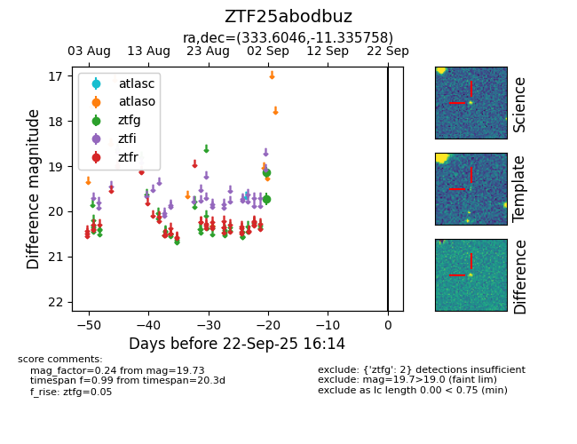

FINK: ZTF25abodbuz
Lasair: ZTF25abodbuz
ALeRCE: ZTF25abodbuz
ZTF25abodbuz (ztf,fink)
equatorial (ra, dec) = (333.6046,-11.33576)
galactic (l, b) = (48.3636,-49.93684)

last ztfg=19.73
2 ztfg detections